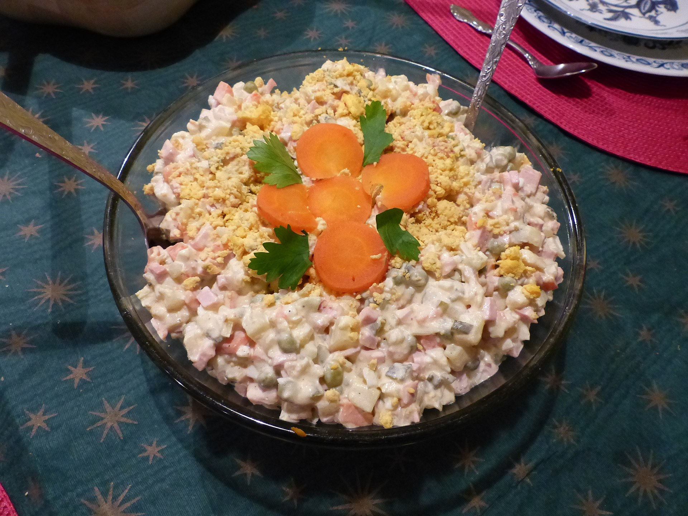

Olivier salad is a traditional salad dish in Russian cuisine, which is also popular in other post-Soviet countries and around the world. In different modern recipes, it is usually made with diced boiled potatoes, carrots, brined dill pickles (or cucumber), green peas, eggs, celeriac, onions, diced boiled chicken or bologna sausage (sometimes ham or hot dogs), and tart apples, with salt, pepper, and mustard added to enhance flavor, dressed with mayonnaise. In many countries, the dish is commonly referred to as Russian salad.
In Russia and other post-Soviet states, as well as in Russophone communities worldwide, the salad has become one of the main dishes on zakuski tables served during New Year's Eve ("Novy God") celebrations.